Configurer et utiliser l'application : un parcours pour les administrateurs, les responsables et les membres.
Ce guide est organisé par besoin. Repérez votre profil, puis allez directement au chapitre utile.
| Vous êtes… | Lisez en priorité |
|---|---|
| Un visiteur | Chapitre 1 (créer un compte et se connecter). |
| Un membre | Chapitre 1 (connexion, profil, notifications) et chapitre 2 (ce que vous voyez). |
| Un berger, un MS, un pasteur, un révérend, un leader | Chapitres 1, 2 et 4 (les pages que l'administrateur vous a confiées). |
| Un administrateur | Tout, en commençant par le chapitre 3 (mise en route) puis le chapitre 5 (site public). |
L'application a deux faces, qui partagent les mêmes informations :
| Partie | À quoi elle sert | Accès |
|---|---|---|
| L'espace de gestion | Suivre les membres, les bacentas, les centres, les cultes et les basontas ; pointer les présences ; saisir les rapports et les offrandes ; planifier ; suivre les bergers. | Connexion obligatoire. Le menu dépend de votre profil. |
| Le site public (la vitrine) | Présenter l'église aux visiteurs : horaires des cultes, centres, événements, équipe, contact. | Ouvert à tous, sans compte. C'est le premier lien du menu : « Notre église ». |
Seules les informations que l'administrateur a choisi de publier apparaissent sur le site public. Rien n'est publié par défaut.
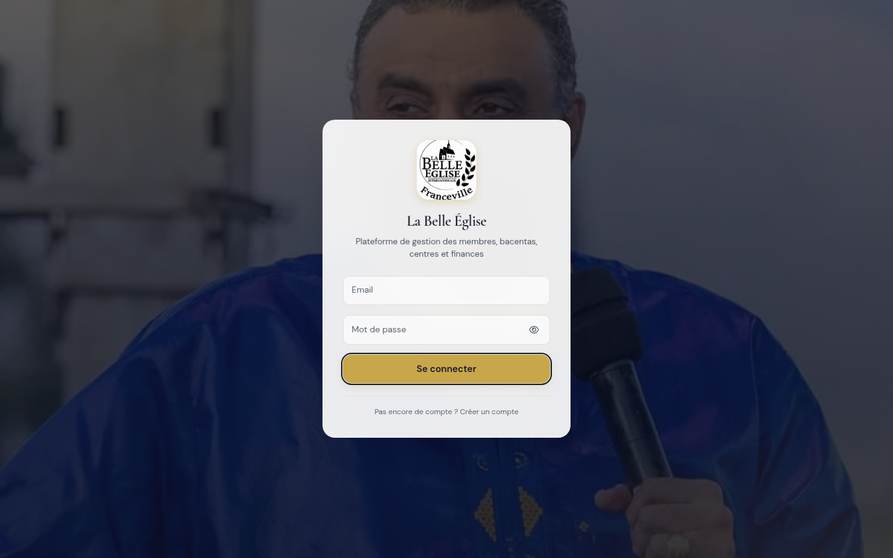
| Message | Que faire |
|---|---|
| Adresse ou mot de passe invalide | Vérifiez la saisie (majuscules, espaces). Un administrateur peut vous créer un nouveau mot de passe. |
| Adresse e-mail non vérifiée | Ouvrez l'e-mail de vérification reçu à l'inscription et cliquez sur son lien. |
| Compte en attente de validation | Votre e-mail est vérifié : il reste à attendre qu'un administrateur active votre compte. |
| Compte désactivé | Contactez un administrateur. |
Un compte créé par ce formulaire a toujours le profil « Membre ». Seul un administrateur peut attribuer un autre rôle, après l'activation.
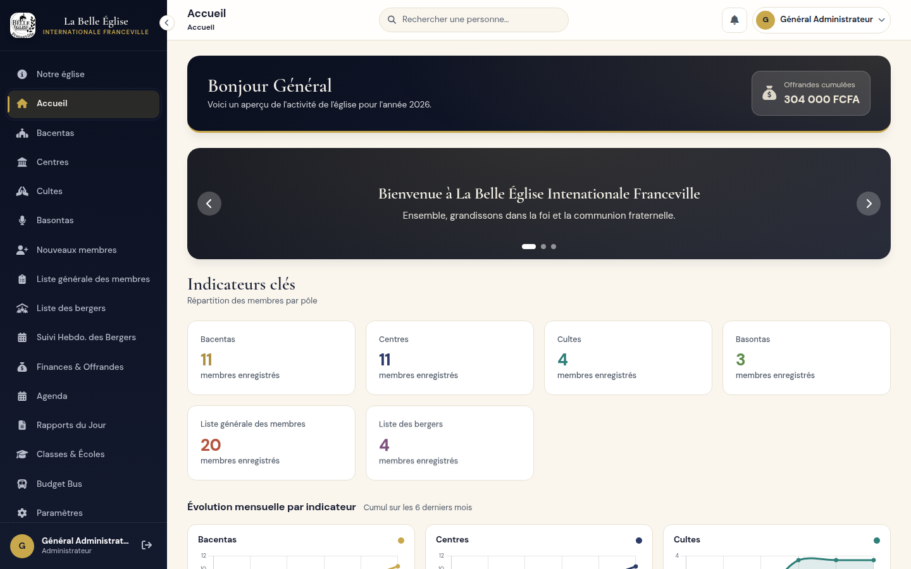
| Zone | Rôle |
|---|---|
| Menu latéral | Donne accès à vos pages. Il s'adapte à votre profil. La petite flèche en haut le réduit ; sur téléphone, le bouton à trois barres l'ouvre. |
| Titre de la page | Indique où vous vous trouvez. |
| Recherche | « Rechercher une personne… » ouvre la fiche d'un membre (réservée aux administrateurs). |
| Cloche | Vos notifications (voir 1.5). |
| Votre nom, en haut à droite | Ouvre le menu du profil : Mon profil, Notre église (le site public) et Déconnexion. |
La cloche affiche un point rouge quand vous avez des notifications non lues. Cliquer sur une notification ouvre directement l'élément concerné. Selon votre profil, vous êtes prévenu d'une nouvelle inscription, de l'activation de votre compte ou d'un nouveau rapport du jour. Le lien Voir toutes les notifications, au bas de la cloche, ouvre la page qui rassemble l'historique.
| Rubrique | Ce que vous pouvez faire |
|---|---|
| Informations personnelles | Modifier prénom, nom, date de naissance, quartier et téléphone, puis Enregistrer. |
| Photo | Changer la photo : formats JPG, PNG, GIF ou WebP. |
| Mot de passe | Saisir l'ancien mot de passe, puis le nouveau (8 caractères minimum) et sa confirmation. |
| Adresse e-mail | Saisir la nouvelle adresse. Vous êtes alors déconnecté automatiquement : vous devez vérifier la nouvelle adresse avant de pouvoir vous reconnecter. |
| Présences récentes | Lecture seule : vos dernières présences enregistrées. |
Avant de changer d'adresse e-mail, assurez-vous d'avoir accès à la nouvelle boîte de réception. Sans la vérification, vous ne pourrez plus vous connecter.
Ce que vous voyez dans le menu dépend de deux choses : votre rôle et les responsabilités que l'administrateur vous a confiées.
| Notion | Signification |
|---|---|
| Rôle | Ce que la personne peut faire en général (administrateur, pasteur, berger…). |
| Responsabilité | Quelle structure précise elle gère : un centre, un bacenta, un culte, un basonta, une classe. |
| Périmètre | Jusqu'où s'étendent ses droits : être responsable d'un centre donne aussi accès aux bacentas de ce centre. |
Jean a le rôle « Berger ». L'administrateur le déclare responsable du bacenta « Sion ». Jean voit alors « Mes bacentas » et peut gérer Sion, mais aucun autre bacenta.
| Rôle | Ce que la personne peut faire |
|---|---|
| Administrateur | Accès à toutes les sections, sans limite de périmètre : comptes, inscriptions, responsabilités, finances, site public, paramètres. |
| Pasteur | Dispose de sa fiche berger et de son suivi hebdomadaire. Peut recevoir la responsabilité d'un centre, d'un bacenta ou d'un culte. |
| Révérend | Fiche et suivi personnels. Peut recevoir la responsabilité d'un culte. |
| Berger | Fiche et suivi personnels. Peut recevoir la responsabilité d'un centre ou d'un bacenta. |
| MS | Traité comme un berger : fiche et suivi personnels, responsabilité de centre ou de bacenta. |
| Leader | Fiche et suivi personnels. Gère le bacenta auquel il appartient. |
| Membre | Aucune capacité de gestion : consulte le site public, son profil et ses notifications. |
Le rôle « Assistant », hérité d'une ancienne version, est traité comme un membre.
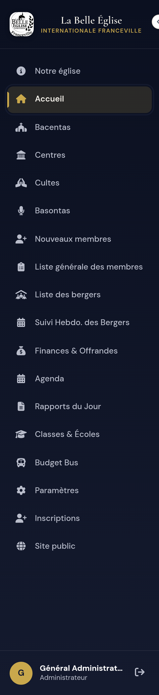
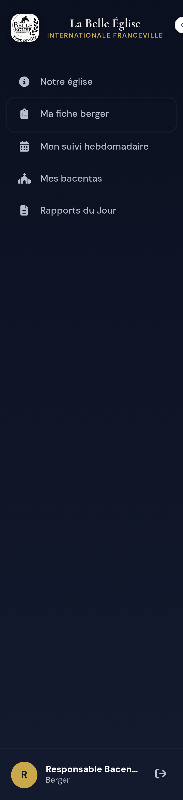
Pour un non-administrateur, certaines entrées n'apparaissent que si la responsabilité correspondante lui a été confiée :
| Entrée du menu | Elle apparaît si… |
|---|---|
| Ma fiche berger, Mon suivi hebdomadaire | Vous avez le rôle berger, MS, pasteur, révérend ou leader. |
| Mes centres, Mes bacentas, Mes basontas, Mes cultes | Vous êtes responsable d'au moins un élément de ce type. |
| Rapports du Jour | Vous êtes responsable d'un bacenta. |
| Budget Bus | Vous êtes responsable d'un centre. |
| Nouveaux membres | L'administrateur vous a confié cette page. |
| Classes & Écoles | Vous êtes responsable d'une classe. |
| Agenda | Vous avez une responsabilité de calendrier. |
Sur un écran d'ordinateur peu haut, les deux dernières entrées du menu administrateur, « Inscriptions » et « Site public », sont sous la ligne de flottaison. Faites défiler le menu pour les voir.
Ce n'est pas une panne : l'administrateur ne vous a probablement pas confié la responsabilité correspondante. Demandez-lui (chapitre 3.4).
Dans quel ordre configurer l'application, et comment gérer les comptes et les responsabilités.
Un nombre rouge à côté de « Inscriptions » indique les demandes en attente. Une notification est aussi envoyée à chaque administrateur lorsqu'un visiteur vérifie son e-mail.
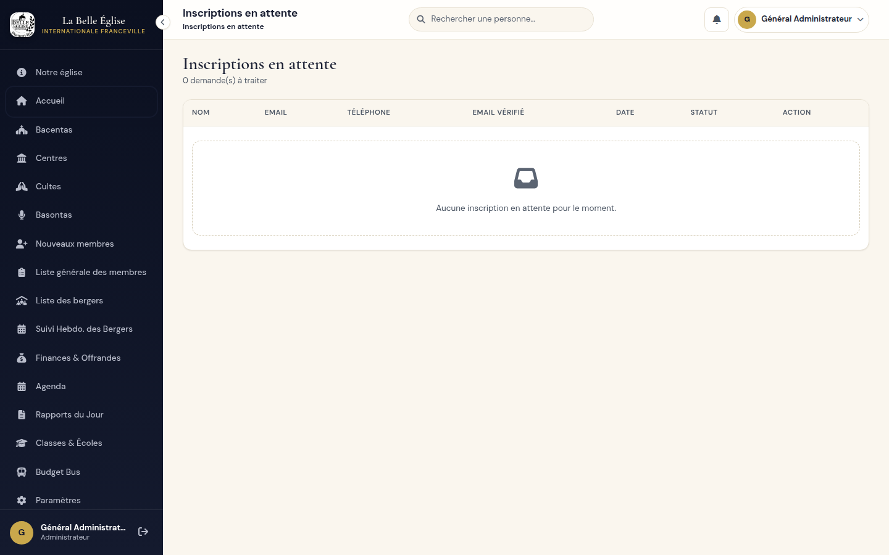
Le tableau liste les comptes avec leur nom, e-mail, rôle et état actif. Chaque ligne propose trois actions : voir la fiche, modifier, supprimer. Le bouton + Créer un compte pour un membre crée un compte sans passer par l'inscription publique.
Quand vous changez le rôle d'une personne, ses responsabilités devenues incompatibles sont retirées automatiquement, et l'opération est tracée. Exemple : un pasteur responsable d'un culte qui devient berger perd cette responsabilité de culte.
La suppression d'un compte ou d'un élément de la structure est définitive. Vérifiez deux fois avant de supprimer.
C'est ici que vous confiez à une personne un centre, un bacenta, un culte, un basonta, une classe ou la page « Nouveaux membres ». Seules les personnes éligibles sont proposées :
| Responsabilité | Rôles éligibles |
|---|---|
| Centre, bacenta | Berger, MS, pasteur |
| Culte | Pasteur, révérend |
Le leader n'est pas concerné : il gère directement le bacenta auquel il appartient. Dès l'attribution, l'entrée correspondante apparaît dans le menu de la personne, à sa prochaine page affichée.
Pour chaque page : à quoi elle sert, qui y accède et comment s'en servir. Les administrateurs voient toutes les pages ; les autres profils, celles de leur périmètre.
Il résume l'activité de l'année : un bandeau avec les offrandes cumulées, un carrousel de messages, un compteur de membres par pôle (bacentas, centres, cultes, basontas, liste générale, bergers) et six graphiques d'évolution sur les six derniers mois. Les chiffres se mettent à jour à mesure que vous saisissez des données.
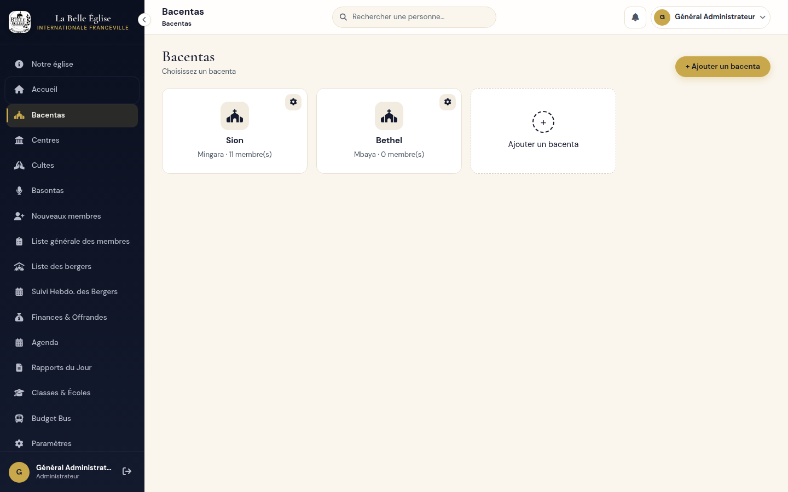
Cliquez sur une carte pour ouvrir le bacenta. Il comporte trois onglets :
| Onglet | Contenu |
|---|---|
| Membres | La liste des membres, l'ajout d'un nouveau membre, et l'affectation de membres existants. |
| Présences | Le pointage des présences par date, la matrice annuelle et l'impression. |
| Suivi & Offrandes | Les visites et les offrandes, avec les totaux du mois et de l'année. |
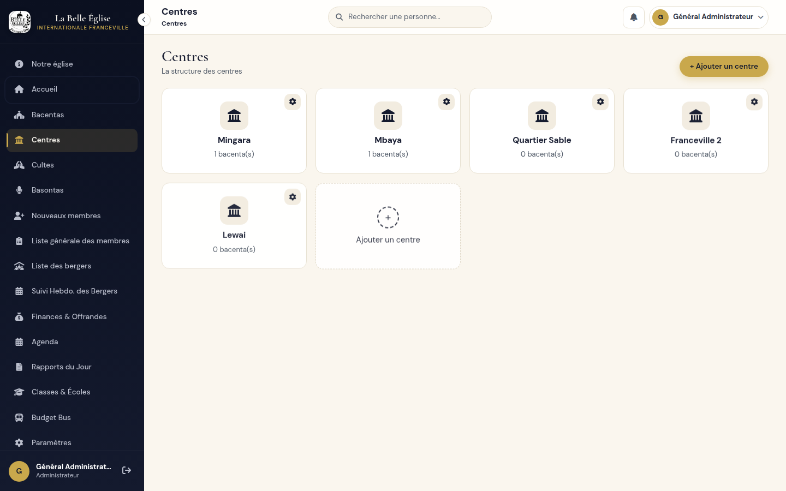
Un centre regroupe plusieurs bacentas. Sa page comporte deux onglets : Bacentas, la liste de ceux qui lui sont rattachés, et Offrandes, le suivi des offrandes du centre. Le bouton + Ajouter un centre crée un centre.
Chaque culte (par exemple « Culte d'Impact » ou « Culte des Leaders ») dispose de son pointage de présence. Choisissez la date du culte, cochez les personnes présentes et enregistrez. La matrice annuelle et la version imprimable donnent une vue d'ensemble de l'année.
Un basonta est un groupe ou un service (chorale, ushers, son…). Sa page comporte deux onglets : Membres et Présences, qui fonctionnent comme ceux d'un bacenta.
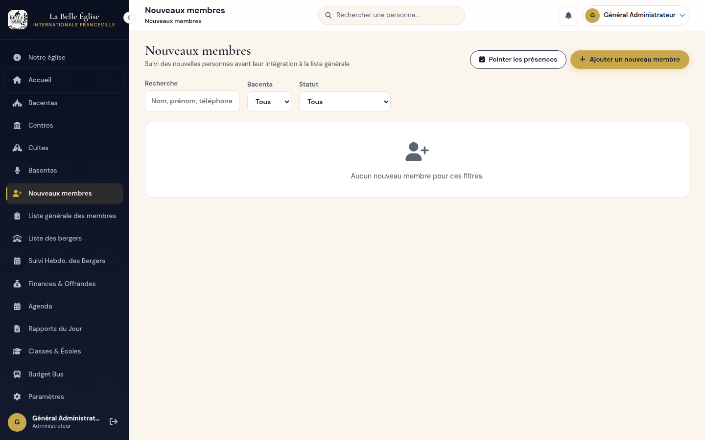
Cette page suit les personnes nouvellement arrivées, avant leur intégration à la liste générale.
| Statut | Signification |
|---|---|
| Nouveau | La personne vient d'être enregistrée. |
| En suivi | Elle est accompagnée et revient aux cultes. |
| Prêt pour intégration | Elle approche du seuil d'intégration. |
| Intégré | Elle est passée dans la liste générale des membres. |
L'intégration est automatique : après 3 présences à des cultes du dimanche différents, la personne est intégrée à la liste générale.
Tous les membres sur une même page : nom, prénom, téléphone, quartier, bacenta, personne qui l'a invité, personne qui l'a reçu et date d'arrivée. La zone « Filtrer » en haut cherche par nom ou quartier. Le crayon, en bout de ligne, modifie la fiche.
La liste regroupe les bergers. La fiche d'un berger rassemble ses informations, ses dîmes, ses examens et ses veillées. Les examens ont trois états : non passé, réussi, échoué.
Un tableau « jour par jour » à remplir chaque semaine : temps de prière quotidien, méditation, jour de prière du flow, livre lu, prédications écoutées, personnes visitées, personnes invitées pour dimanche, diffusion Mixlr, jours de jeûne.
Une zone « Observation de l'administration » permet à l'administrateur de laisser un commentaire sur la semaine. La page peut être imprimée.
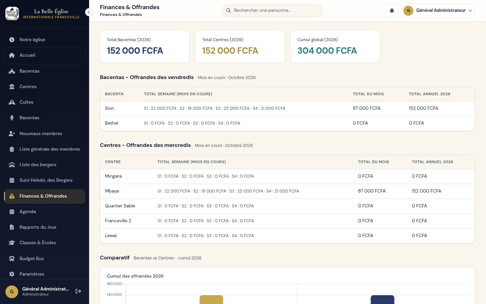
Cette page est une synthèse en lecture : total des bacentas, total des centres, cumul global de l'année, détail semaine par semaine, total du mois et total annuel, et un graphique comparatif. Les offrandes des bacentas (le vendredi) et des centres (le mercredi) se saisissent dans l'onglet « Suivi & Offrandes » de chaque bacenta, ou « Offrandes » de chaque centre.
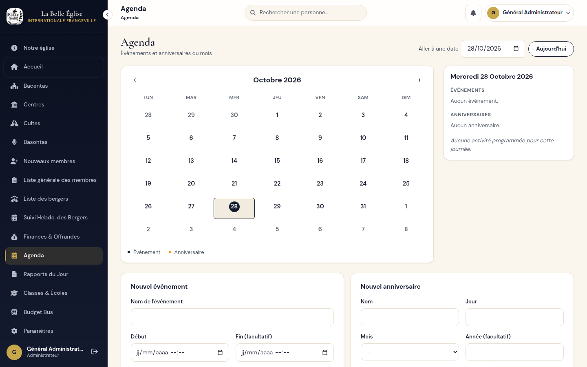
Les événements à venir de l'Agenda sont ceux que l'administrateur peut choisir de publier sur la vitrine (chapitre 5.7).
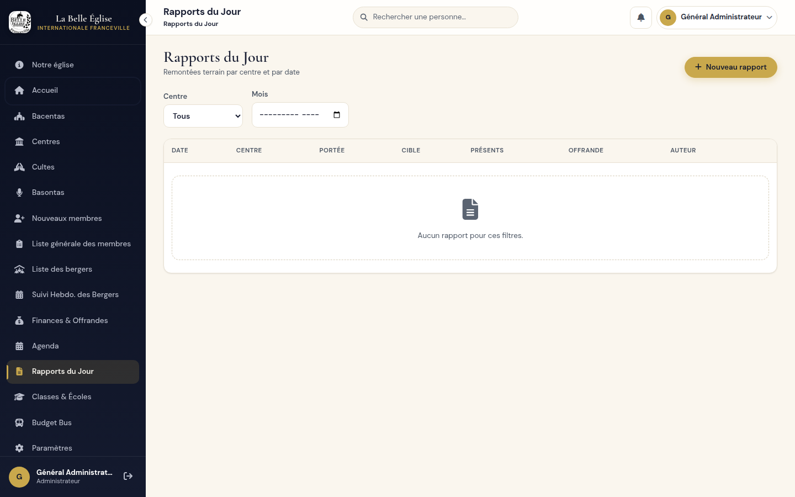
Les responsables du centre et du bacenta sont enregistrés avec le rapport au moment de sa création. Un rapport créé par quelqu'un d'autre s'ouvre en consultation seule.
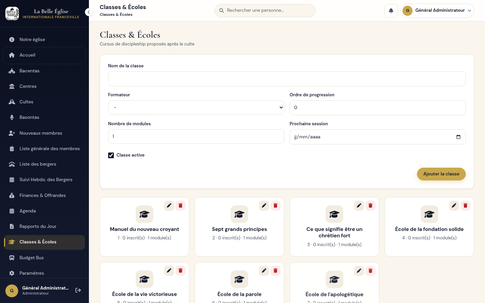
Sept cursus de discipulat sont prévus, dans cet ordre : Manuel du nouveau croyant ; Sept grands principes ; Ce que signifie être un chrétien fort ; École de la fondation solide ; École de la vie victorieuse ; École de la parole ; École de l'apologétique.
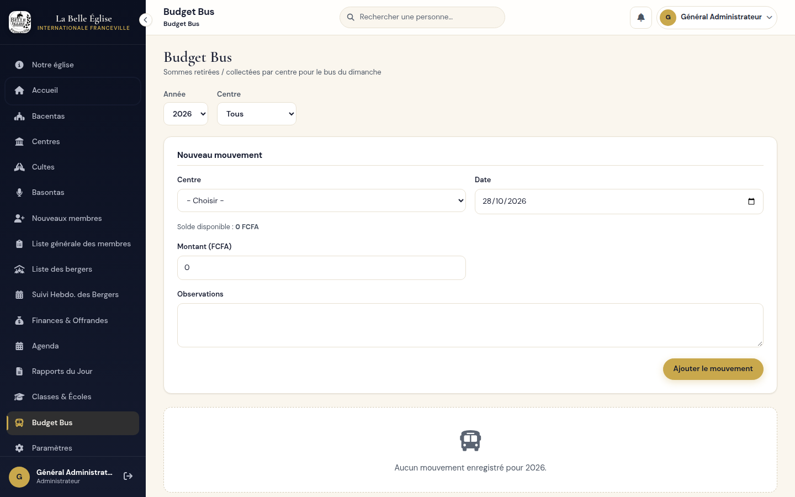
Cette page suit les sommes retirées pour le bus du dimanche, centre par centre.
Solde disponible = total des offrandes du centre - total des retraits déjà enregistrés. Le montant d'un retrait ne peut pas dépasser ce solde.
La vitrine est la page que voient les visiteurs. Tout se règle dans l'éditeur « Site public ».
L'éditeur est organisé en onglets, listés à gauche (en haut sur téléphone) :
| Onglet | Ce qu'il règle sur la vitrine |
|---|---|
| Vue d'ensemble | L'état du site et ce qu'il reste à compléter. |
| Identité et accueil | Nom, slogan, texte d'accueil, adresse, image d'accueil, coordonnées. |
| À propos | Accroche, histoire et image de la section « À propos ». |
| Centres | Les centres affichés, leurs horaires et leurs contacts. |
| Équipe pastorale | Les personnes présentées. |
| Événements | Les événements à venir mis en avant. |
| Médias et prédications | Le lien du culte en direct, la dernière prédication. |
| FAQ | Les questions de la section « Première visite ». |
| Ministères et activités | Les bacentas et basontas présentés. |
| Pages légales | Mentions légales et politique de confidentialité. |
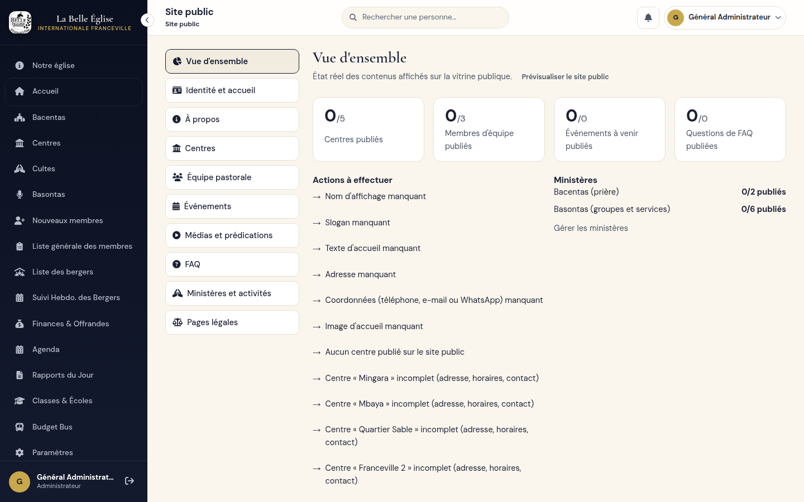
Commencez ici. « Actions à effectuer » liste, en clair, ce qui manque (nom d'affichage, slogan, image, centre incomplet, etc.) ; chaque ligne mène directement à l'onglet concerné. Le bloc « Ministères » indique combien de bacentas et de basontas sont publiés.
| Champ | Utilisation |
|---|---|
| Nom d'affichage * | Le nom de l'église, affiché en tête du site. Obligatoire. |
| Slogan | Une phrase courte, au-dessus du titre de l'accueil. |
| Texte d'accueil | Un accueil chaleureux pour les visiteurs (500 caractères au maximum). |
| Adresse (siège) | L'adresse générale de l'église. |
| Image d'accueil | L'image de fond de l'accueil : JPG, PNG, WebP ou GIF, 4 Mo au maximum. Ajoutez un texte alternatif qui décrit l'image, pour les lecteurs d'écran. |
| Coordonnées et réseaux | Téléphone, WhatsApp (avec l'indicatif international), e-mail, et liens Facebook, YouTube, Instagram. Les liens doivent commencer par https. |
Le fond de l'accueil peut défiler sur plusieurs images ou vidéos. Elles se déposent dans le dossier assets/carousel du site, nommées 1, 2, 3… avec leur extension : le numéro fixe l'ordre de passage. Cette opération se fait sur le serveur, pas dans l'éditeur.
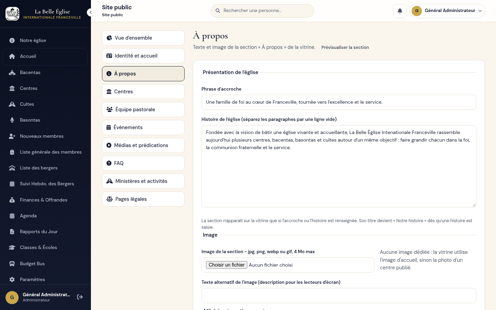
| Champ | Utilisation |
|---|---|
| Phrase d'accroche | Une phrase d'introduction, mise en avant sous le titre. |
| Histoire de l'église | Le texte principal. Séparez les paragraphes par une ligne vide. |
| Image de la section | Une image dédiée, avec son texte alternatif. Sans image, le site utilise l'image d'accueil, puis la photo d'un centre publié. |
La liste permet de rechercher et de filtrer les centres. Cliquez sur un centre pour ouvrir sa fiche : informations générales (adresse, quartier, ville), contacts propres au centre, informations publiques (responsable affiché, lien d'itinéraire) et horaires.
Un centre n'apparaît sur le site que s'il a une adresse, au moins un horaire et un moyen de contact : le sien, ou à défaut le contact général de l'église. La vue d'ensemble signale les centres incomplets.
Cochez les personnes que vous souhaitez présenter, puis Enregistrer l'équipe. Le bouton « Gérer les membres » mène à la page « Présentation de l'église », où l'on ajoute, modifie ou supprime les membres de l'équipe.
Une case cochée n'est pas une preuve d'autorisation. Ne publiez un nom, un rôle, une photo ou une présentation que si la personne a donné son accord explicite. La publication est désactivée par défaut pour tout nouveau membre.
La liste reprend les événements à venir créés dans l'Agenda. Pour chacun, cochez « Publier », puis complétez si besoin la description publique, l'affiche (JPG, PNG, WebP ou GIF, 4 Mo au maximum) et un lien d'inscription (https). Le lien d'inscription ne doit être renseigné que si un véritable mécanisme d'inscription existe. L'événement le plus proche alimente aussi la barre d'annonce et l'accueil du site.
Rédigez les questions que se posent les nouveaux visiteurs, chacune avec sa réponse. Elles s'affichent dans la section « Première visite ». Une question sans réponse n'est jamais publiée. Utilisez le bouton d'ajout pour une nouvelle question ; l'icône de suppression retire une question.
Deux listes : les bacentas (rassemblements de prière) et les basontas (groupes et services : chorale, pianistes, ushers…). Pour chaque élément, rédigez la description publique (public concerné, horaire, contact), puis cochez-le pour le publier. Un ministère sans description n'est pas publié. Aucune liste de membres n'est jamais exposée.
Saisissez le texte des mentions légales et celui de la politique de confidentialité. Chaque page n'est accessible que si son texte est renseigné ; sinon, le lien correspondant n'existe pas.
| Problème | Solution |
|---|---|
| Je n'arrive pas à me connecter. | Lisez le message affiché (tableau en 1.2). Si l'adresse est inconnue ou le mot de passe oublié, demandez à un administrateur. |
| Je n'ai pas reçu l'e-mail de vérification. | Regardez dans les courriers indésirables. Le lien est valable 24 heures. |
| Je ne vois pas telle page dans le menu. | Elle dépend de vos responsabilités (2.3). Demandez-les à un administrateur. |
| Où sont « Inscriptions » et « Site public » ? | Tout en bas du menu administrateur. Faites défiler le menu. |
| Où modifier le texte « À propos » du site ? | Menu → Site public → onglet « À propos ». |
| Une section du site public a disparu. | Elle n'a plus de contenu publié : une section vide est masquée. Vérifiez la vue d'ensemble. |
| Mon centre n'apparaît pas sur le site. | Vérifiez qu'il est publié et qu'il a une adresse, un horaire et un contact (5.5). |
| Mon image est refusée. | Utilisez un fichier JPG, PNG, WebP ou GIF de 4 Mo au maximum. |
| J'ai changé d'e-mail et je suis déconnecté. | C'est normal : vérifiez la nouvelle adresse avec l'e-mail reçu, puis reconnectez-vous. |
| Un nouveau membre n'est pas passé « Intégré ». | Il lui faut 3 présences à des cultes du dimanche différents, pointées dans « Nouveaux membres ». |
| Je ne peux pas retirer de l'argent du Budget Bus. | Le montant dépasse le solde disponible du centre (offrandes moins retraits). |
| Terme | Définition |
|---|---|
| Bacenta | Un rassemblement de prière en petit groupe, rattaché à un centre. |
| Centre | Un lieu de culte qui regroupe plusieurs bacentas. |
| Basonta | Un groupe ou un service : chorale, ushers, son… |
| Culte | Une réunion de l'église dont on pointe les présences. |
| Berger | Une personne qui accompagne un groupe. Elle a une fiche et un suivi hebdomadaire. |
| MS | Rôle traité comme celui de berger. |
| Responsabilité | Le centre, bacenta, culte, basonta ou la classe qu'une personne gère. |
| Vitrine | Le site public, visible par tous. |
| Publier | Rendre un élément visible sur la vitrine. |
Elles s'écrivent à la suite de l'adresse de l'application, après index.php.
| Page | Fin de l'adresse |
|---|---|
| Site public | ?page=eglise |
| Connexion | ?page=login |
| Créer un compte | ?page=register |
| Mon profil | ?page=profile |
| Notifications | ?page=notifications |
| Inscriptions en attente (admin) | ?page=admin_inscriptions |
| Comptes et responsabilités (admin) | ?page=parametres |
| Éditeur du site public (admin) | ?page=site_public |
| Onglet « À propos » de l'éditeur (admin) | ?page=site_public&tab=about |
| Présentation de l'église, équipe (admin) | ?page=apropos |